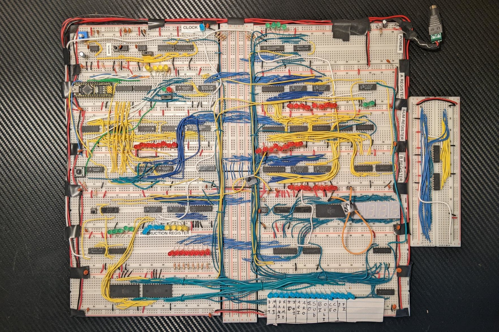
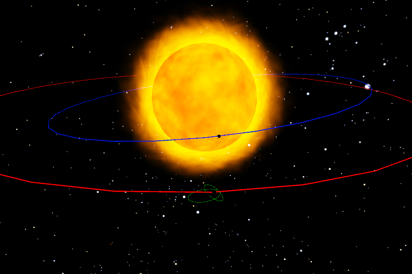
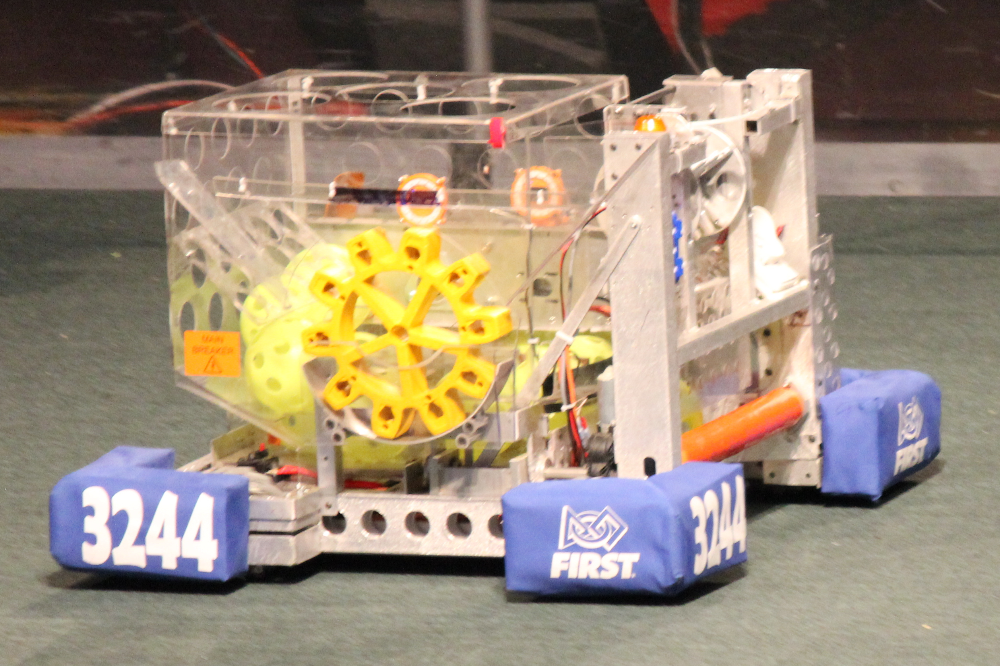
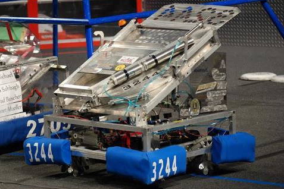

Utilized with the 555 Oscillator project and on rocket team avionics.
Private Pilot, Space Enthusiast, FIRST Robotics Alumni
Donovan Magney
Bachelor of Computer Engineering - GPA: 3.86
University of Minnesota Twin Cities
*Expected Spring 2024
Hard working student with a passion for learning new things and striving to utilize my skills to push the boundaries of space exploration (starting with Mars) to make humans multiplanetary. I spend my time in school and working on interesting projects to improve my engineering skills. I also volunteer in FIRST Robotics and helping others discover how much fun STEM can really be!
As a child I've always had an interest in space, learning about the stars, planets, and the scale of the universe has always amazed me. As I got older, I took an interest into computers and how they worked, which led me to FIRST Robotics. Robotics taught me how much fun it is to bring your own ideas to life to accomplish a task, and was the primary influence on my decision to become an engineer.
Then, on February 6th, 2018, SpaceX launched a Tesla Roadster into space as a test flight for their newest rocket, the Falcon Heavy. This was the very first launch livestream that I ever watched, and was the spark that inspired me to pursue spaceflight as a career!
Projects







Extracurriculars
Avionics Sub-Team Member - University of Minnesota Rocket Team, Minneapolis, MN
September 2021 - Present
- Redesigned the "Sensor Card" on the rockets flight computer to fix design errors and position sensors more optimally on the printed circuit board
- Modified Flight Computer to save data to a micro SD card and improved card interfacing by upgrading the connectors
Field Reset Volunteer - FIRST Robotics 10,000 Lakes Regional, Minneapolis, MN
Seasons: 2019, 2022
- Supervised robot placing and removal from the playing field to ensure safety
- Collaborated with a team of 10 to reset the field quickly and precisely to conserve the schedule and fair play
- Reviewed game rules and field setup to be able to answer field questions by any team
Team Mentor/Member - Granite City Gearheads FIRST Robotics Team, Saint Cloud, MN
October 2012 - May 2019
- Collaborated with a team of 30 to successfully build a 1st place robot in 2013 and a 2nd place robot in 2018
- Improved public speaking skills by presenting to management and lead engineers of potential sponsors every year
- Mentored students for 3 years on both technical and non-technical aspects of a robotics team
Experience
NASA Academy Intern - NASA Langley Research Center, Hampton, VA
June 2022 - Present
- Hosted a workshop teaching other interns how to develop their own HTML resume website
- Finding existing technologies or developing new technologies to assist in wildfire management
System Administrator/Cyber Operations Specialist - Army National Guard, Rosemount, MN
October 2015 - Present
- Coordinated with multiple sites to diagnose many system failures to invlude equipment, networks, software, and applications,
then brainstorm and implement solutions - Briefed leadership daily on new issues and the status of current issues
- Compiled and reported data on suspected threats to peers
- Handled highly classified data in a Secure Classified Information Facility (SCIF) without incident for over a year
- Acheived Cyber equivalency (accepted without schooling) by fullfilling constantly changing requirments over 1 year
- Completed 3 weeks of Basic Leaders Course (BLC) to improve leadership abilities
Assistant Manager - Subway, Rice, MN
July 2014 - August 2020
- Stepped in as manager on occasions when the manager was not present, up to 1 month at a time
- Frequently interacted with franchise owner and other store managers to maintain finances and supplies
- Managed and assessed 5 new employees by answering questions and conducting tests for promotions
Skills
Click the skill to learn more about it!
CAD
Used to learn PCB design for the first time with the PCB Counter project.
Used for the creation of the Soyuz and Electron 3D models, as well as other minor 3D printing projects.
A tool used by the rocket team. Minimal experience, however the team held a class designing a nosecone.
Equipment
A tool I've used primarily for the 555 Oscillator project, but it's also used to verify any circuit/circuit components I'm learning about.
Usually used when learning about how a circuit and circuit components change waveforms, or as an adjustable clock signal.
Used as a primary tool in projects such as the rocket 3D prints, and as a secondary tool creating things such as housings or mounts for other projects.
Utilized in nearly every electronics project like the Flight Computer, 555 Oscillator, and Breadboard Computer. Also serves as a valuable tool for learning about circuits and circuit components.
Certifications
Earned to increase aeronautical knowledge and get one step closer to space.
Attained as a part of my role as a Cyber Operations Specialist.
Attained as a part of my role as a Cyber Operations Specialist.
Microsoft Office
Utilized anytime electronic notes are made or project reports during school.
Used as a Cyber Operations Specialist to report statistics up to leadership. Excel is also utilized to make a bill of materials for the 555 Oscillator project and various Rocket Team projects. The occasional school lab utilizes Excel to graph data as well.
Powerpoint has been used in the past mostly for school speeches as a visual aid.
Programming
As the Arduino's language, C++ has been used at certain points in the Flight Computer and Breadboard Computer projects, as well as other smaller projects. It also appears in 2 computer science courses in school.
Used at school in a FPGA class for many labs, the capstone being a calculator capable of 4 arithmetic operators and includes memory.
The primary programming language as a Cyber Operations Specialist. The Flight Computer project also uses Python for data processing, and minor Raspberry Pi projects also have utilized it.
The scripting language of choice used when on Windows machines as a Cyber Operations Specialist. An 8 weeks cyber course I took was based on PowerShell as well.
The scripting language of choice used when on Linux machines as a Cyber Operations Specialist.
High school class taught very basic HTML, but this website refreshed my basic knowledge of html.
Other Software
The application that was used to interface with the FPGA during the school FPGA class.
Software used in a circuits class in school. Also occasionally use it when learning about new circuit/circuit components.
Created a test rocket to learn the basics of using the software.
The IDE used for the coding portion of the Block Breaker Project.
Coding IDE used to handle the data with the Flight Computer project with python and to construct this website with HTML
Used whenever an Arduino is used, like the Breadboard Computer and the Flight Computer
IDLE was the IDE used when teaching myself Python and practicing it as a Cyber Operations Specialist.
The application used to construct the Space Sim project and the Block Breaker game and other minor games.
Used during the 2013 and 2014 robotics season to create a safety animation. Also used for other smaller personal projects occasionally.